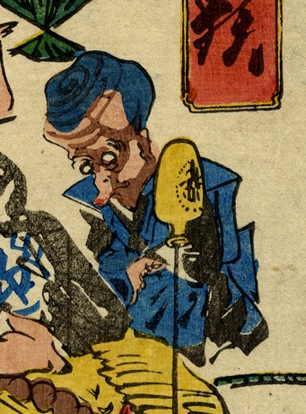

裃を着た化物。頭部は蛸のようで、口をすぼめて突きだしている。
著作者：河鍋狂斎／出典：親書誌：U426_nichibunken_0230：どふけ百万遍；ドウケヒャクマンベン／日付：2010／資源識別子：U426_nichibunken_0230_0010_0000
Copyright (c)2010- International Research Center for Japanese Studies, Kyoto, Japan. All rights reserved.